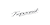
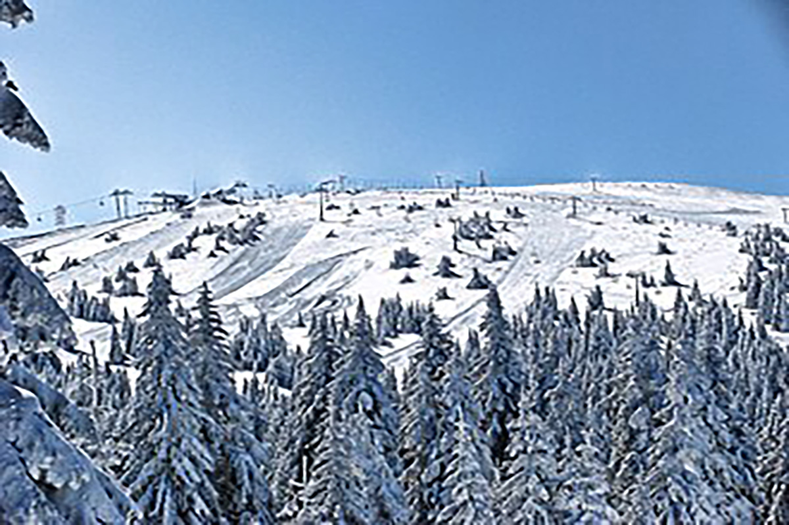
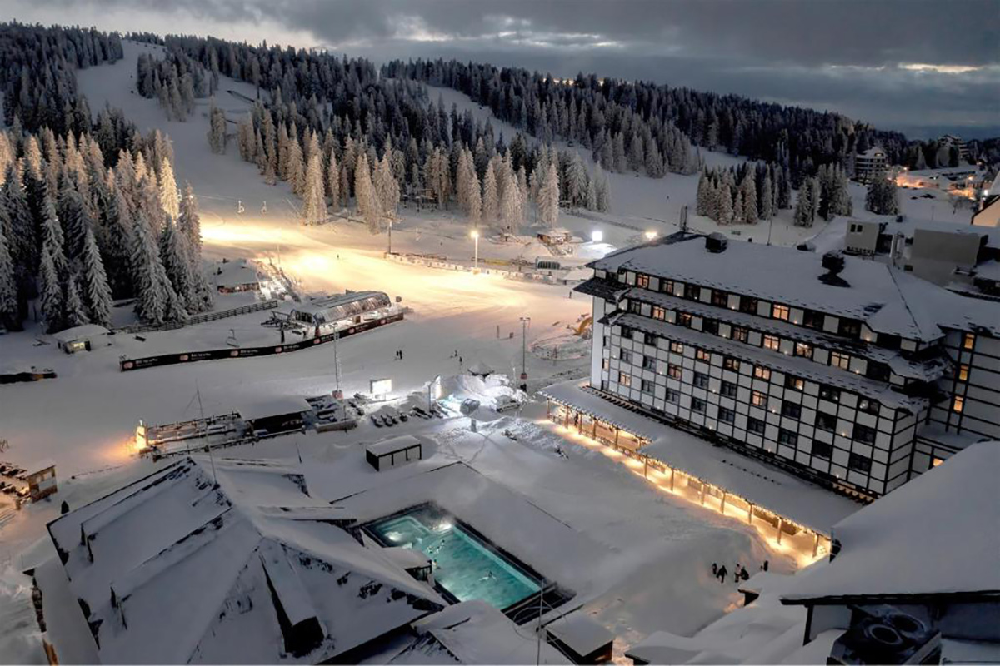
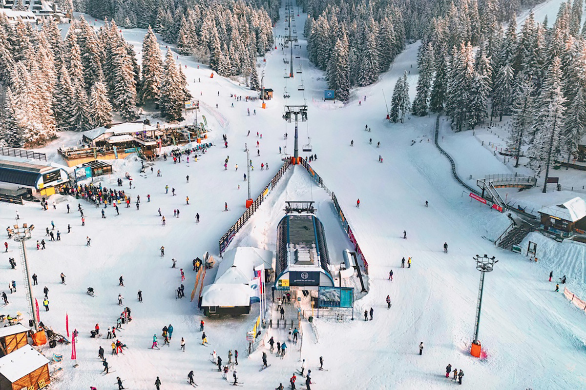
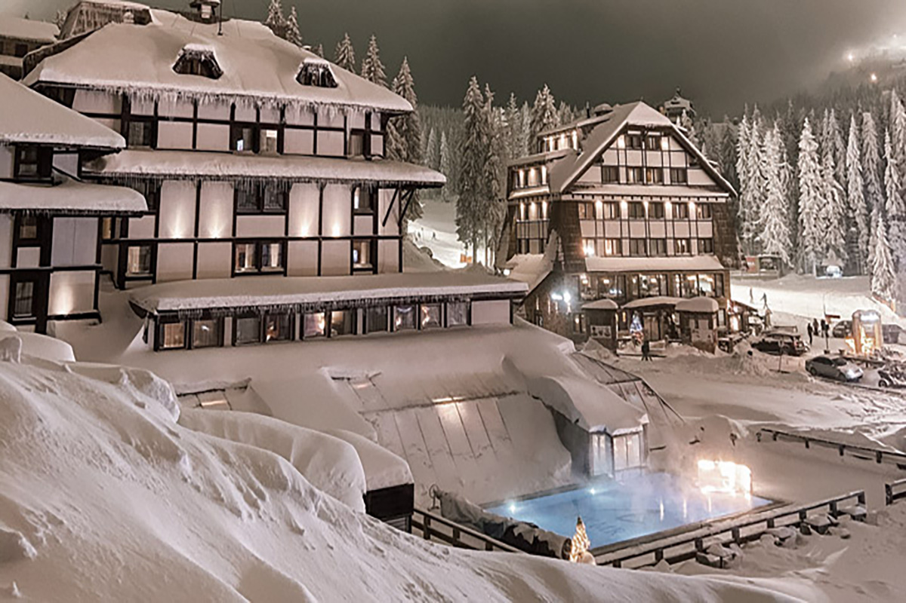
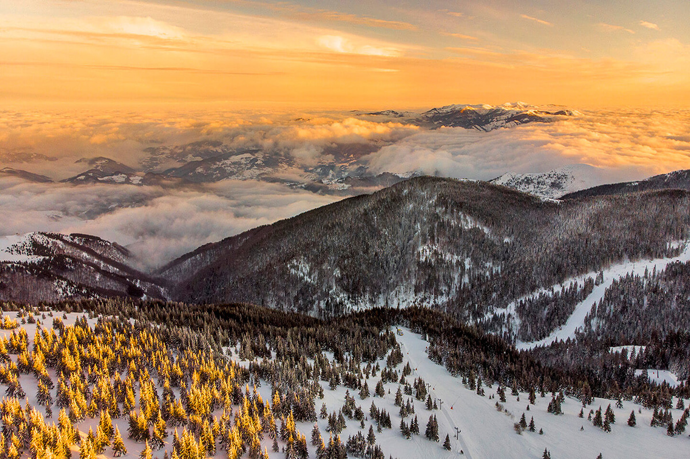

Kopaonik
Kopaonik je najveći ski centar u Srbiji, poznat po zimskim sportovima i prelepim prirodnim pejzažima.

O Kopaoniku
Kopaonik, poznat i kao „Srebrna planina“, najveći je planinski masiv u Srbiji. Osim što je najpoznatiji ski centar u zemlji, Kopaonik je i nacionalni park, bogat florom i faunom.
Planina nudi više od 60 kilometara uređenih ski staza, modernu infrastrukturu i brojne sadržaje za ljubitelje zimskih sportova. Tokom leta, Kopaonik je idealan za planinarenje, biciklizam i uživanje u netaknutoj prirodi.
Osim sportskih aktivnosti, posetioci mogu uživati u wellness centrima, restoranima i bogatom noćnom životu. Kopaonik je destinacija koja privlači turiste tokom cele godine.
Galerija




